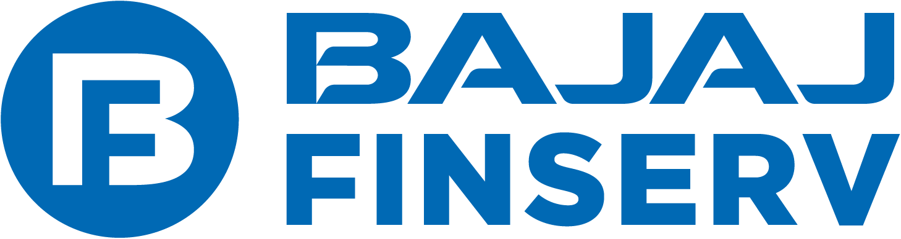
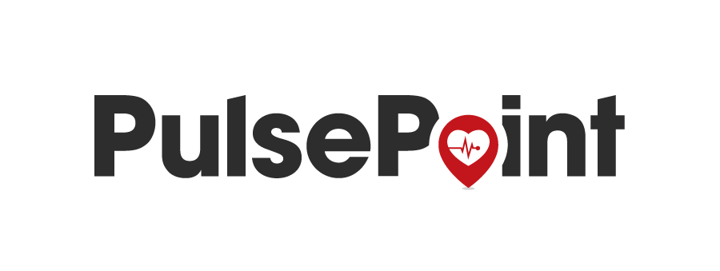
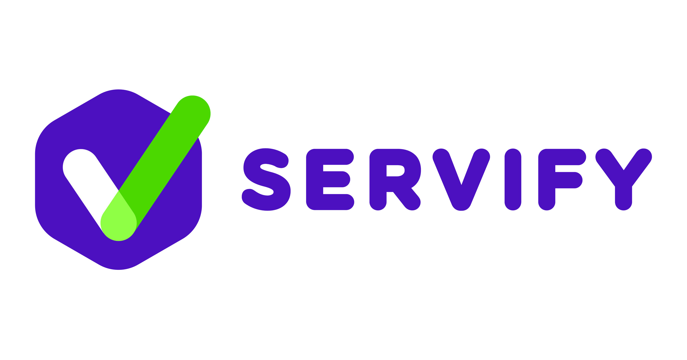
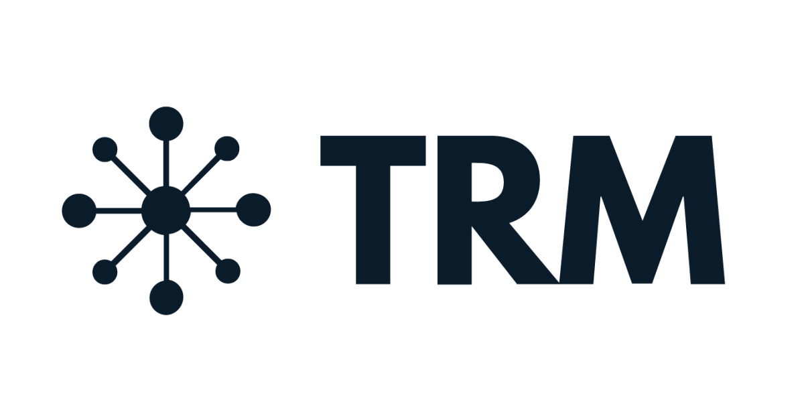

01
Data Engineering
Batch and incremental pipelines, ETL/ELT, metadata-driven frameworks, orchestration, data quality and performance engineering.
I’m Preet Mehta — I build governed data platforms, model-ready pipelines, and applied AI systems for healthcare and beyond.
I work at the intersection of data engineering, analytics and business outcomes — designing pipelines and platforms that make data usable, governed and ready for decisions.
The last six years have been in healthcare — claims, clinical, enrollment, survey and operational data — but the craft underneath is domain-agnostic: pipelines, platforms, product analytics and ML systems that people can trust.
Outside of work I teach, judge hackathons, mentor students and write Healthcare for Data Engineers — a practical series for people working with healthcare data.
“Turning complex data into systems people can trust.”
Twenty-two elements in six families. Hover a tile to inspect it — or pick a family to light it up.
Batch and incremental pipelines, ETL/ELT, metadata-driven frameworks, orchestration, data quality and performance engineering.
Lakehouse architecture, medallion patterns, Delta Lake, governance, cataloging and cloud-native analytics.
Healthcare data concepts, claims, clinical data, HEDIS, HCC/risk adjustment, Medicare and member analytics.
Feature pipelines, temporal data preparation, model-ready datasets, experimentation and analytics delivery.
Turning governed datasets into dashboards, self-service analytics and decision-ready experiences.
Architecture, migration planning, stakeholder alignment, governance and adoption across teams.
A practical view of the journey: source systems → ingestion → governed storage → transformation → quality → analytics and ML.
Three case studies across healthcare platforms, ML foundations and cloud modernization. Hover a panel to open it.
Modernizing fragmented healthcare data into a governed, scalable platform for analytics and downstream ML.
Building temporal feature pipelines that respect snapshot dates, lookback windows and follow-up periods.
Outcome: $4M in annual savings from a production Medicaid churn model.
Moving legacy pipelines toward cloud-native architectures with stronger governance, reliability and observability.
Everything I build and run — pick the door you need.
Healthcare data platforms, ML systems, architecture reviews.
Book a call → Speaking & WorkshopsKeynotes, corporate training, university sessions.
Book Preet → Community1,500+ data engineers learning together daily.
Join → NewsletterHealthcare for Data Engineers — practical, no fluff.
Subscribe → AI DemosNine working prototypes, most running in your browser.
Try them → Mentoring1:1 guidance for data engineers leveling up.
Reach out →Five organizations, one through-line — taking messy, high-stakes data and turning it into systems people can trust. Hover a logo for a peek inside — click to read the full story.
IoT & supply-chain data · 5 yrs
How I built this at DCM ShriramLooker-certified in 30 days
How I built this at SearceSales-ops reporting at scale
How I built this at LinkedInCampaign data at 340M-member scale
How I built this at CVS Health$4M Medicaid churn model · Medicare Stars ML
How I built this at EXLIoT & supply-chain data · 5 yrs
Looker-certified in 30 days
Data Engineer intern · sales-ops at scale
Campaign data at 340M-member scale
Manager · $4M Medicaid churn model
Boston User Group organizer
Organizations I have worked with — as an employee and through client consulting engagements.
 Air AsiaLooker dashboards for customer analytics and fare prediction
Air AsiaLooker dashboards for customer analytics and fare prediction Arcus FinanceLooker dashboard tracking transaction patterns across countries
Arcus FinanceLooker dashboard tracking transaction patterns across countries
Bajaj Finserv HealthLooker dashboard analyzing symptoms and hospitals across cities EPL GlobalPower BI dashboards for real-time machine parameter analysis
EPL GlobalPower BI dashboards for real-time machine parameter analysis Imagination MediaTableau dashboards analyzing employee effort hours and profits
Imagination MediaTableau dashboards analyzing employee effort hours and profits Platform ScienceLooker dashboards monitoring logistics globally
Platform ScienceLooker dashboards monitoring logistics globally
PulsePointBigQuery solution support for user-level cost tracking
ServifyBI solutions and Superset workshop
TRM LabsLooker dashboards for churn and retention KPIs06 — Writing
Healthcare for Data Engineers
Today is Day 30, and we are going to continue with the same real-world use case.
Read on SubstackHealthcare for Data Engineers
Today is Day 29, and today we are going to use an actual use case in which all the concepts that we learned so far will be applicable.
Read on SubstackHealthcare for Data Engineers
So far we understood a lot about HHV and IOA and the entire process of why a medical chart exists, the chart retrieval process from clinic to insurance, and how this data eventually becomes part of th
Read on SubstackCommunication
Read on Substack1.
Read on SubstackBeing prepared is half the battle.
Read on SubstackHealthcare for Data Engineers
Now that we understood the data captured by third-party vendors for the retrospective purpose, and we also understood who the retrospective team is and what kind of work they do, let’s understand pros
Read on SubstackHealthcare for Data Engineers
In the previous post, we understood what third-party vendors send to the payer and what a Data Engineer receives.
Read on SubstackThe certifications that carry weight — everything else lives in the archive.
A few words from people I have worked with — managers, teammates, clients and mentees.
“I have had the opportunity to work closely with Preet and have seen his leadership and mentorship qualities firsthand. He has been a great team leader and mentor to our team, and his presence brought confidence and stability to the project. Knowing that he was leading and guiding the team meant we could focus on execution without worrying about direction.”
“As a Sr. Data Architect at CVS Health, I have had the pleasure of working closely with Preet for more than six months, and I can confidently recommend him as a highly skilled and dependable professional. Preet consistently demonstrates a strong work ethic, exceptional productivity, and outstanding organizational skills.”
“Preet served as a TA for my course, Business Analytics Capstone, in Spring 2022, and quickly set the standard for future teaching assistants. The course is a graduate-level, project-based course in which students take on semester-long projects that involve large datasets and complex analytical models.”
“I had the opportunity to work with Preet for over a year at CVS Health, during which time he played a pivotal role in supporting my team from a data engineering standpoint. Preet brought a genuine curiosity not only for technical aspects but also for understanding the broader business landscape, including campaign dynamics and audience engagement…”
“I was fortunate to connect with Preet on LinkedIn nearly a year ago, and since then, his impact on my professional journey has been nothing short of transformative. Preet's insights and guidance have been a constant source of inspiration, reshaping my perspective on the tech industry and my career path.”
40 recommendations from managers, teammates, clients and mentees — read them all on LinkedIn ↗
A growing library of practical resources for people learning data engineering, preparing for interviews or building their next career move.
Curated books, reading lists and practical references for building strong data engineering fundamentals.
Explore the library ↗Clean, practical resume templates and guidance designed for data, analytics and engineering roles.
Get the templates ↗Talks, tutorials, workshops and videos that make complex data concepts easier to understand.
Watch & learn ↗SQL, Spark, Databricks, data engineering, architecture and scenario-based interview practice.
Start practicing ↗A free community for data engineers — 1,500+ members sharing practical content, asking questions, and growing together across healthcare data, AI/ML, and cloud.
Join the free community →Stuck on a pipeline, prepping for interviews, or want feedback on your resume or career move? Grab a slot — students and community members are always welcome.
Virtual student session
AI agent demo + breakout
Hackathon finals judging